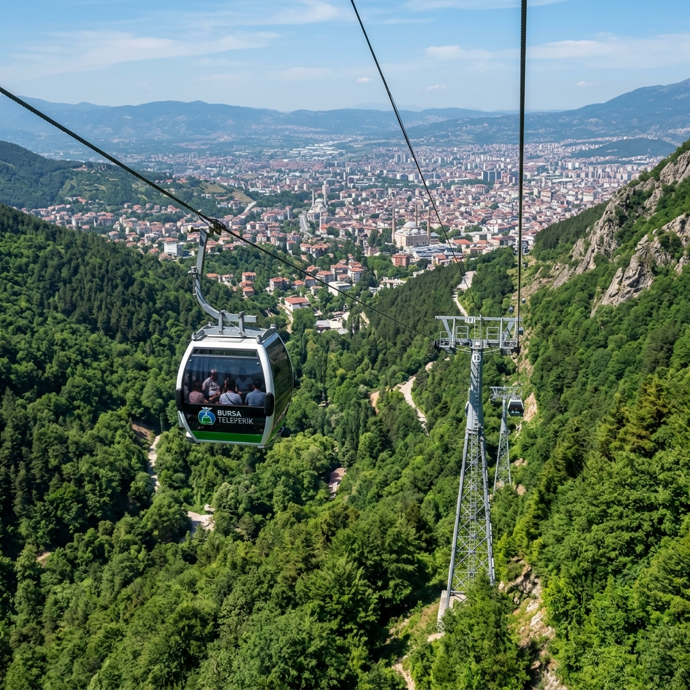

Osmanlı'nın ilk başkenti, Yeşil Şehir
Şehrin eşsiz güzelliklerinden seçilmiş fotoğraflar
Bursa'nın öne çıkan turistik mekânları
1399'da tamamlanan ve 20 kubbesiyle Osmanlı mimarisinin başyapıtı sayılan büyük cami.
2543 metre yüksekliğiyle Türkiye'nin en büyük kayak merkezi ve dört mevsim ziyaret edilen doğa parkı.
700 yıllık Osmanlı mirasını yaşatan, UNESCO tescilli köy. Dar taş sokakları ve ahşap evleriyle büyüleyici.
Sultan I. Mehmed dönemine ait; çini mozaikleriyle süslü, yeşil renkli mimari şaheseri.

Şehir merkezinden Uludağ'a uzanan ve panoramik manzaralar sunan teleferik hattı.
15. yüzyıldan kalma tarihi han. Bursa'nın ipek ticaretinin simgesi; çarşı ve kafeler ile ziyaretçi çeker.
Bursa, Türkiye'nin kuzeybatısında, Marmara Bölgesi'nde yer alan ve tarihî önemi ile doğal güzellikleri bir arada barındıran bir şehirdir. Osmanlı Devleti'nin ilk başkenti olarak tarihe geçen Bursa, bugün Türkiye'nin 4. büyük şehri konumundadır.
Otomobil ve tekstil sektörüyle Türkiye ekonomisine önemli katkılar sağlayan Bursa; İpek Yolu üzerindeki konumuyla tarihi boyunca ticaret merkezi olmuştur. Yeşil doğası, termal kaynakları ve kayak merkeziyle dört mevsim tercih edilen bir destinasyondur.